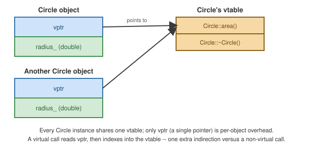

Inheritance and Polymorphism
|
This content was generated with the assistance of AI and should be verified against the official documentation before being relied on in production. |
Public, Protected, and Private Inheritance
class Base {
public:
void publicMethod() {}
protected:
void protectedMethod() {}
private:
void privateMethod() {}
};
class PublicDerived : public Base {}; // is-a: Base's public/protected members keep their access -- the
// overwhelmingly common case, and the only one that models "is-a"
class ProtectedDerived : protected Base {}; // Base's public members become protected in ProtectedDerived
class PrivateDerived : private Base {}; // Base's public/protected members become private -- "implemented
// in terms of", rarely needed since composition usually reads clearerDefault access for class inheritance is private; for struct inheritance it is public — write it
explicitly regardless, so the intent doesn’t depend on the reader remembering the default.
Virtual Functions, override, and final
class Shape {
public:
virtual double area() const = 0; // pure virtual -- makes Shape abstract
virtual ~Shape() = default; // virtual destructor -- see below
};
class Circle : public Shape {
public:
explicit Circle(double r) : radius_(r) {}
double area() const override { return 3.14159265358979 * radius_ * radius_; } // "override" -- compile
// error if this doesn't
// actually override anything
private:
double radius_;
};
class ImmutableCircle final : public Circle { // "final" on the class -- no further subclassing allowed
public:
using Circle::Circle;
double area() const final { return Circle::area(); } // "final" on the method -- no further overriding
};override catches the classic typo of a slightly wrong signature (a base’s area() const vs. a derived’s
non-const area(), which would silently declare an unrelated new function instead of overriding) as a
compile error instead of a silent bug.
Abstract Classes
A class with at least one pure virtual function (= 0) is abstract — it cannot be instantiated, only used
as a base:
// Shape (above) is abstract because area() is pure virtual.
// Shape s; // error: cannot instantiate abstract class
Shape* s = new Circle(2.0); // fine: through a pointer/reference to the base
delete s; // calls Circle's destructor correctly -- because ~Shape() is virtualVirtual Destructors and Object Slicing
Deleting a derived object through a non-virtual base-class pointer is undefined behavior — only the base’s
destructor runs, leaking any derived-only resources. Always declare a base’s destructor virtual (or the class
final with no intent to delete polymorphically) once any member function is virtual:
class BadBase {
public:
~BadBase() {} // NOT virtual -- a latent bug waiting for a polymorphic delete
};
class BadDerived : public BadBase {
public:
~BadDerived() { /* release resource */ }
};
// BadBase* p = new BadDerived();
// delete p; // UB: only ~BadBase() runs, BadDerived's cleanup never happensObject slicing is the related pitfall of assigning a derived object to a base object by value — the
derived-only data is "sliced off", and any virtual call thereafter dispatches to the base’s implementation
(illustrated here with a concrete, non-abstract Shape2 so the by-value parameter itself is legal to declare;
Shape above cannot be sliced this way precisely because it is abstract, and neither can be constructed):
class Shape2 {
public:
virtual double area() const { return 0.0; }
virtual ~Shape2() = default;
};
class Circle2 : public Shape2 {
public:
explicit Circle2(double r) : radius_(r) {}
double area() const override { return 3.14159265358979 * radius_ * radius_; }
private:
double radius_;
};
void processByValue(Shape2 s) { s.area(); } // Shape2 is sliced from whatever derived type was passed in --
// ALWAYS calls Shape2::area(), never Circle2's, no matter what
// was actually passed in
void processByReference(const Shape2& s) { s.area(); } // no slicing: polymorphism works correctly through
// a reference or pointerdynamic_cast and RTTI
dynamic_cast safely downcasts through a polymorphic hierarchy (one with at least one virtual function),
returning nullptr (for pointers) or throwing std::bad_cast (for references) if the cast is invalid — powered by RTTI (Run-Time Type Information):
#include <memory>
class Square : public Shape {
public:
explicit Square(double side) : side_(side) {}
double area() const override { return side_ * side_; }
private:
double side_;
};
std::unique_ptr<Shape> shape = std::make_unique<Circle>(3.0);
if (auto* circle = dynamic_cast<Circle*>(shape.get())) {
circle->area(); // safe: this really is a Circle
}
if (dynamic_cast<Square*>(shape.get()) == nullptr) {
// safe: shape is not a Square, no crash, just nullptr
}Needing frequent dynamic_cast down a hierarchy is often a design smell — see
Vocabulary Types (std::variant/std::visit) or
Patterns and Idioms for alternatives that push the
decision into the type system instead of run-time checks.
The Casts
double d = 3.9;
int i = static_cast<int>(d); // checked at compile time; the general-purpose, safest explicit cast
struct A { virtual ~A() = default; };
struct B : A {};
A* a = new B();
B* b = dynamic_cast<B*>(a); // checked at run time via RTTI, as above
const int x = 5;
int& y = const_cast<int&>(x); // strips const -- almost always a code smell; mutating y is UB if
// the original object (x here) is actually const
int n = 65;
char* raw = reinterpret_cast<char*>(&n); // reinterprets bits with essentially no safety net -- for low-level
// byte/pointer manipulation onlyPrefer, in order: static_cast for ordinary conversions, dynamic_cast for safe polymorphic downcasts,
const_cast only to interoperate with a const-incorrect API you cannot change, and reinterpret_cast as a last
resort for low-level bit reinterpretation.
Object Layout with a Vtable Pointer

Each polymorphic object carries a hidden vptr pointing at its class’s vtable — an array of function pointers the compiler fills in with the most-derived override of each virtual function. A virtual call indirects through this pointer at run time (the "zero-overhead" cost of polymorphism: one extra pointer per object, one indirection per virtual call).
How Virtual Dispatch Works
A class with a virtual function carries one hidden pointer (the vptr) in every object, pointing to a per-class table of function pointers (the vtable). A call through a base pointer or reference loads the vptr, indexes the table by the function’s slot number and jumps, so the cost is one extra indirection and the call cannot be inlined unless the compiler can prove the dynamic type.
vptr (8 bytes)
title_ (24 bytes)
minutes_ (4 + padding)"] O -->|"vptr"| T["Dvd vtable
[0] ~Dvd
[1] loan_days -> Dvd::loan_days
[2] kind -> Item::kind (inherited)"] T --> F["Dvd::loan_days()"]
#include <memory>
#include <print>
#include <string>
#include <typeinfo>
#include <utility>
#include <vector>
class Item {
public:
explicit Item(std::string title) : title_(std::move(title)) {}
virtual ~Item() { std::println(" ~Item({})", title_); } // virtual: delete through Item* is safe
virtual int loan_days() const = 0; // pure virtual: Item is abstract
virtual std::string kind() const { return "item"; } // overridable default
const std::string& title() const { return title_; }
private:
std::string title_;
};
class Book : public Item {
public:
using Item::Item;
int loan_days() const override { return 21; }
std::string kind() const override { return "book"; }
~Book() override { std::println(" ~Book"); }
};
class Dvd final : public Item {
public:
Dvd(std::string title, int minutes) : Item(std::move(title)), minutes_(minutes) {}
int loan_days() const override { return 7; }
int minutes() const { return minutes_; }
private:
int minutes_;
};
struct Plain { int a; };
struct WithVirtual { int a; virtual void f() {} };
void print_item(Item* i) { std::println("{} -> {} days", i->title(), i->loan_days()); }
int main() {
std::vector<std::unique_ptr<Item>> shelf;
shelf.push_back(std::make_unique<Book>("Dune"));
shelf.push_back(std::make_unique<Dvd>("Alien", 117));
for (const auto& it : shelf) {
std::println("{}: {} for {} days", it->title(), it->kind(), it->loan_days()); // virtual dispatch
}
// dynamic_cast: checked downcast; returns nullptr for the wrong type.
for (const auto& it : shelf) {
if (auto* d = dynamic_cast<Dvd*>(it.get())) {
std::println("{} runs {} minutes", d->title(), d->minutes());
} else {
const Item& ref = *it;
std::println("{} is not a Dvd (typeid: {})", it->title(), typeid(ref).name());
}
}
// Overhead of polymorphism: one hidden pointer per object (the vptr).
std::println("sizeof(Plain) = {}, sizeof(WithVirtual) = {}", sizeof(Plain), sizeof(WithVirtual));
// Slicing: copying a derived object into a base object value cuts off the derived part.
Dvd dvd("Heat", 170);
std::println("sizeof(Dvd) = {}, sizeof(Item) = {}", sizeof(Dvd), sizeof(Item));
print_item(&dvd); // pointer: still the Dvd, calls Dvd::loan_days
std::println("destroying the shelf:");
shelf.clear();
std::println("end of main");
}$ clang++ -std=c++23 -Wall -Wextra poly.cpp -o poly
$ ./poly
Dune: book for 21 days
Alien: item for 7 days
Dune is not a Dvd (typeid: 4Book)
Alien runs 117 minutes
sizeof(Plain) = 4, sizeof(WithVirtual) = 16
sizeof(Dvd) = 40, sizeof(Item) = 32
Heat -> 7 days
destroying the shelf:
~Item(Alien)
~Book
~Item(Dune)
end of main
~Item(Heat)The output shows the mechanics:
-
it->kind()returns"book"for theBookand"item"for theDvd, which does not override it, so the the vtable slot ofDvdforkindpoints at the inheritedItem::kind. -
sizeof(WithVirtual)is sixteen bytes against four forPlain: the vptr is eight bytes and alignment pads the rest. A class with a virtual function pays this in every object, so a billion small objects are a poor fit for polymorphism. -
Destroying through
std::unique_ptr<Item>runs~Book, then~Item, because the destructor is virtual. If~Itemwere not virtual, deleting aBookthrough anItem*would be undefined behaviour (typically skipping the derived destructor and leaking), the single most important rule of polymorphic base classes: a class with virtual functions needs a virtual destructor (or a protected, non-virtual one if it is never deleted through the base). -
dynamic_cast<Dvd*>consults run-time type information and returnsnullptrwhen the object is not aDvd; the reference form throwsstd::bad_castinstead. If you find yourself casting often, the interface is probably missing a virtual function. -
Dvdisfinal, so the compiler may devirtualize calls made on a knownDvd. -
The
typeidname printed is implementation-defined (4Bookis the Itanium mangling used by clang and gcc).
Object Slicing, Shown
#include <print>
#include <string>
struct Shape {
virtual std::string name() const { return "shape"; }
virtual ~Shape() = default;
};
struct Circle : Shape {
double radius = 2.0;
std::string name() const override { return "circle"; }
};
std::string by_value(Shape s) { return s.name(); } // slices: only the Shape part is copied
std::string by_ref(const Shape& s) { return s.name(); } // keeps the dynamic type
int main() {
Circle c;
std::println("by value: {} by reference: {}", by_value(c), by_ref(c));
Shape sliced = c;
std::println("sizeof(Circle)={}, sizeof(Shape)={}, sliced.name()={}", sizeof(Circle), sizeof(Shape), sliced.name());
}$ clang++ -std=c++23 -Wall -Wextra slice.cpp -o slice
$ ./slice
by value: shape by reference: circle
sizeof(Circle)=16, sizeof(Shape)=8, sliced.name()=shapeCopying a Circle into a Shape value copies only the Shape subobject, so the vptr is the Shape vptr and
the call goes to Shape::name. The radius is gone (sizeof(Shape) is half of sizeof(Circle)). Always pass
polymorphic objects by reference or pointer, and consider deleting the copy operations of a polymorphic base to
make slicing a compile error.
See Also
-
C: Pointers — C has no virtual functions: the same dispatch is built by hand from structs of function pointers.